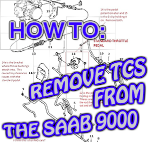

The Saab Workshop
Your one stop for all information pertaining to automobiles made by the Swedish
company Saab. Take some time to check out our Tech Tips section to find answers
to commonly asked questions. If you don't find what you're looking for, head over
to our forum to see if a site member can answer your question.

This Week's How To Articles
Please note, the write-ups on Saab Workshop are to be used as references. In order to complete any repair you must have the
mechanical aptitude to do so. If you are unsure, please seek help from someone experienced in automotive repair.
- Bypass TCS on a 9000 (9000 93)
Learn how to remove the problematic TCS system from the MY1993 9000. Many 9000's have literally been scraped
due to issues with this system, and now, thanks the introduction of the Trionic Suites software package, it is
possible remove even on the odd-duck MY1993.
- Replace Serpentine Belt (900 94-98 and 9-3 99-03)
The serpentine belt should be replaced every 60 thousand miles. This guide covers the procedure
and offers advice with regard to when to replace your upper and lower idler pulley and tensioner
pulley.
- R & R Front Oil Seal (900 79-93)
Finally, learn how to replace the front seal on the tricky c900. The engine configuration on this
model places the front of the engine right up against the firewall making R & R of this part difficult.
Our guide describes how to make a special tool that will ease the process significantly.
Headlines & Important Information
Server Maintenance - March 1 2014
Our site will be down for maintenance on March 12th from 2:00 AM to 4:00 AM EST. These updates
will improve our ability to serve you best. We apologize for any inconvenience.
It's Not Over Yet! - March 1 2011
Koenigsegg and GM were unable to reach an agreement on final details of their transaction, and
all talks are off. Yet, another suitor, Skyper, a small Dutch auto maker, has begun to show interest.
All deals involving Skyper will be difficult as the company is tiny- only producing a few hundred cars per year.
GM Looks to Sell Saab as Finical Troubles Worsen - April 1 2009
As General Motors enters bankruptcy, they look to liquidate assets and Saab is likely to be amongst
the brands to moved. Swedish super-car manufacturer Koenigsegg has emerged as a potential suitor but
completing any sale will be difficult.